Fertility
← regions and settlements · wiki index
How rich a region's farmland is, on a scale of 1 to 14: the Fertility row on a region page. It describes the land but does not speed up population growth in RIS: the growth the game gives for each point of fertility is taken back by the Region Information Scroll.
| Fertility | Regions | Builds | Blocks | Effects | Units | Fertility | Regions | Builds | Blocks | Effects | Units |
|---|---|---|---|---|---|---|---|---|---|---|---|
| Farm level 1 | 4 | — | — | 1 | — | Farm level 8 | 25 | — | — | 1 | — |
| Farm level 2 | 12 | — | — | 1 | — | Farm level 9 | 15 | — | — | 1 | — |
| Farm level 3 | 14 | — | — | 1 | — | Farm level 10 | 21 | — | — | 1 | — |
| Farm level 4 | 26 | — | — | 1 | — | Farm level 11 | 8 | — | — | 1 | — |
| Farm level 5 | 40 | — | — | 1 | — | Farm level 12 | 8 | — | — | 1 | — |
| Farm level 6 | 44 | — | — | 1 | — | Farm level 13 | 3 | — | — | 1 | — |
| Farm level 7 | 62 | — | — | 1 | — | Farm level 14 | 3 | — | — | 1 | — |
Farm level 2
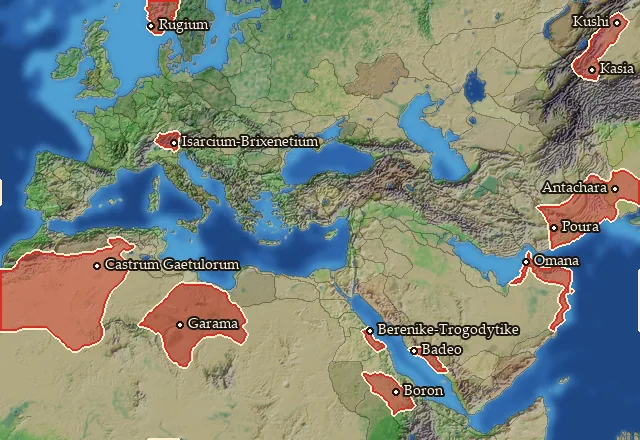
On 12 regions.
- Numeric effects where it is present: population growth -2 (Region Information Scroll)
Regions at this fertility (12)
Blemmyia · Boreia Trogodytike · Chatriaia · Gaetulia · Garamantia · Gedrosia · Gusan · Kasiane · Kassanitis · Omanitis · Rhaetia · Rugia
Farm level 4
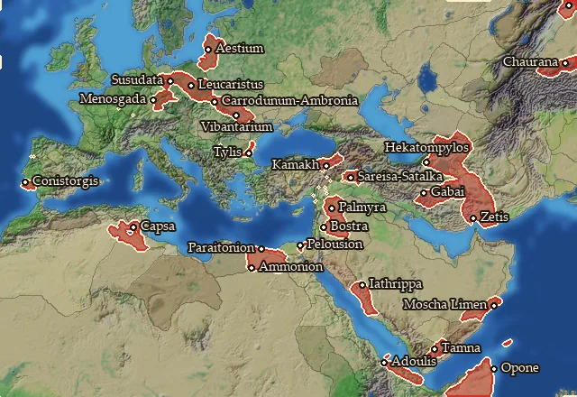
On 26 regions.
- Numeric effects where it is present: population growth -4 (Region Information Scroll)
Regions at this fertility (26)
Adouli · Aestia · Agni · Ambronia · Ammonia · Ano Persia · Auranitis · Ausea · Chaurania · Coisstobocia · Conia · Gordyene · Hesperos Aigyptos · Kattabaneia · Mikra Armenia · Naharvalia · Notia Karmania · Omana Kolpos · Oponis · Palmyrene · Parthia · Pelousiake · Semnonia · Tyle · Volcaea · Yathrib
Farm level 7
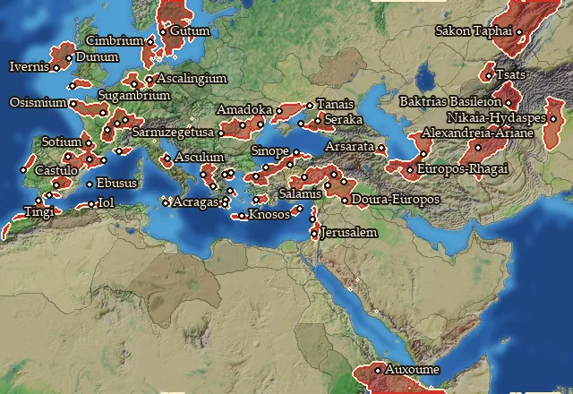
On 62 regions.
- Numeric effects where it is present: population growth -7 (Region Information Scroll)
Regions at this fertility (62)
Aeduia · Akragas · Ambrakikos Kolpos · Anatolike Baktriane · Aquitania · Arevacia · Argolis · Ariane · Arvernia · Axoumitis · Ay-Bushim · Ay-Khol · Bithynia · Boreia Hyrkania · Borysthenes · Carnutia · Carpiania · Cheruscia · Cimbria · Dacia · Dumnonia · Edonis · Emporitia · Euboia · Gutia · Gylakeia · Hydaspes · Ilergetia · Ioudaia · Ivernia Meridionalis · Ivernia Orientalis · Kappadokia · Karia · Kaspiane · Lakonia · Malaka · Minoa · Mygdonia · Mygdonia-Syria · Mysia · Oretania Meridionalis · Osismia · Osrhoene · Paphlagonia · Phanagoreion · Picenum · Rhagiane · Sakaia · Salamina · Segobrigia · Sequania · Sinopeia · Sirakene · Sophene · Sugambria · Tagia · Tanaitis · Ting · Tingene · Tsatsene · Tyrasia · Zidun
Farm level 8
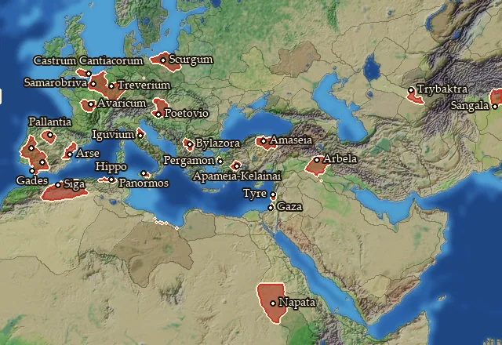
On 25 regions.
- Numeric effects where it is present: population growth -8 (Region Information Scroll)
Regions at this fertility (25)
Agadir · Ambiana · Anatolike Chorasmene · Arbelitis · Bastarnia Vetus · Biturigia · Cantiacia · Gazaia · Kaikia · Kathaia · Lusitania · Napa · Paionia · Paroreia Phrygia · Pontos · Saguntia · Shigan · Tauriscia · Treveria · Turdetania Septentrionalis · Umbria · Vaccaea · Xupon · Ziz · Zur
Farm level 9
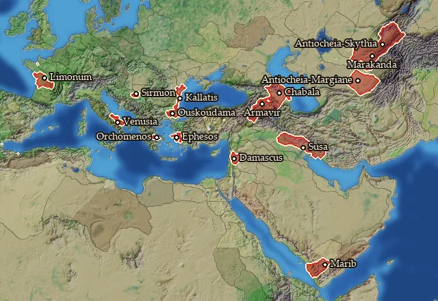
On 15 regions.
- Numeric effects where it is present: population growth -9 (Region Information Scroll)
Farm level 12
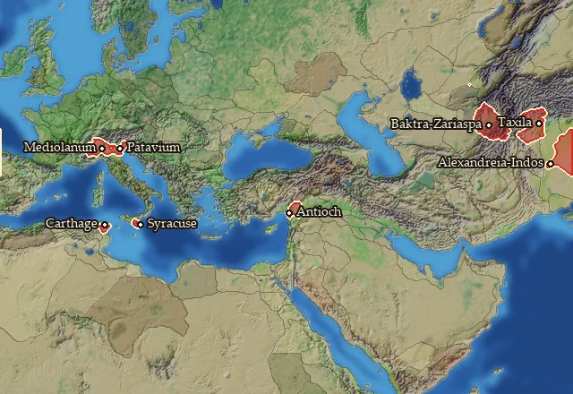
On 8 regions.
- Numeric effects where it is present: population growth -12 (Region Information Scroll)
Farm level 14
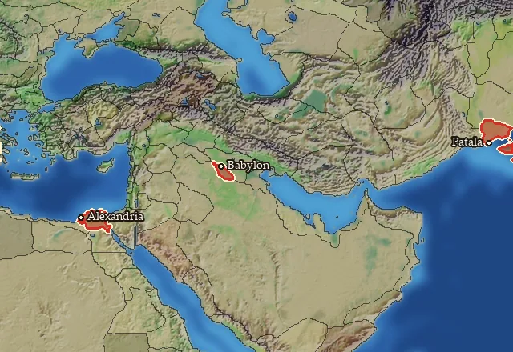
On 3 regions.
- Numeric effects where it is present: population growth -14 (Region Information Scroll)
Regions at this fertility (3)
Farm level 1
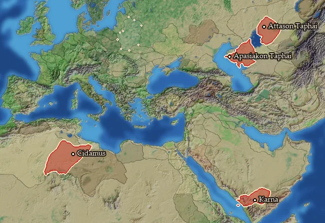
On 4 regions.
- Numeric effects where it is present: population growth -1 (Region Information Scroll)
Regions at this fertility (4)
Apasiakaia · Attasia · Phazania · Qarnawu
Farm level 3
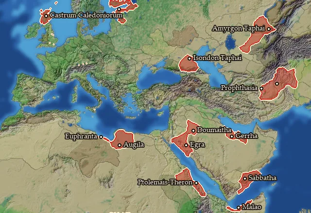
On 14 regions.
- Numeric effects where it is present: population growth -3 (Region Information Scroll)
Farm level 5
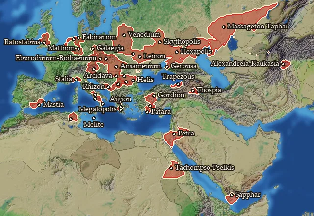
On 40 regions.
- Numeric effects where it is present: population growth -5 (Region Information Scroll)
Regions at this fertility (40)
Achaia · Albocensia · Ansamenia · Aorsia · Ardiaia · Arkadia · Basilike Skythia · Basoropeda · Boihaemum · Buridavensia · Chaucia Maior · Cotinia · Dodekaschoinos · Frisia · Liguria · Georgike Skythia · Getaia · Hellenike Makronia · Homeritis · Kapisene · Kroton · Lykia · Maiotis · Maleth · Marcomannia Vetus · Massagetaia · Massylia Occidentalis · Mastienia · Mattiaca · Megale Phrygia · Naissitania · Neuria · Noricum · Pisidia · Poseidonia · Raqemo · Samnium · Siluria · Triballia · Venedia
Farm level 6
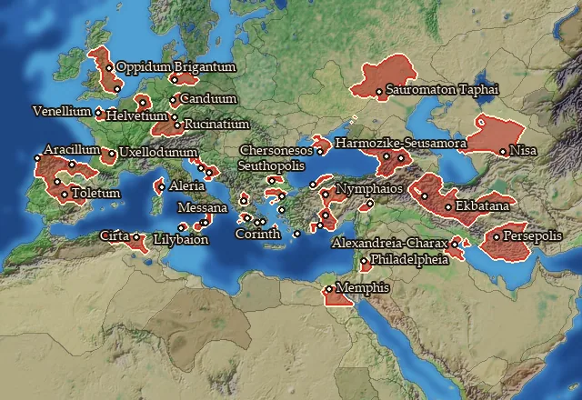
On 44 regions.
- Numeric effects where it is present: population growth -6 (Region Information Scroll)
Regions at this fertility (44)
Aitolia · Artabria · Attike · Brigantia · Cadurcia · Cantabria · Carpetania · Charakene · Chattia · Eburonia · Epetia-Salonitis · Epikrateia · Hellenike Mariandynia · Helmantike · Helvetia Vetus · Iberia · Kardia · Kirthan · Kolchis · Kommagene · Korinthia · Kyrnos · Langobardia · Lesbos · Liburnia · Lykaonia · Mamertina · Media · Memphites Nomos · Mikra Chersonesos · Nisaia · Odrysia · Orestis · Pamphylia · Pedias Atropatene · Persia · Rabat Xaman · Rhegion · Rhodos · Sauromataia · Tektosagia · Trinobantia · Venellia · Vindelicia
Farm level 10
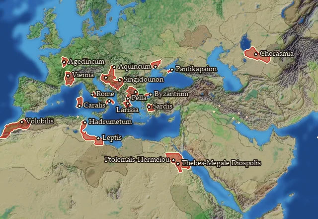
On 21 regions.
- Numeric effects where it is present: population growth -10 (Region Information Scroll)
Regions at this fertility (21)
Adrumet · Allobrogia · Bosporos · Chorasmene · Emathia · Eraviscia · Eumolpia · Karaly · Kimmerikos Bosporos · Latium · Lepqi Adir · Lydia · Magna Graecia · Mauretania · Olbiana · Pathyrites Nomos · Savia · Senonia · Skordiskia · Thessalia · Thinites Nomos
Farm level 11
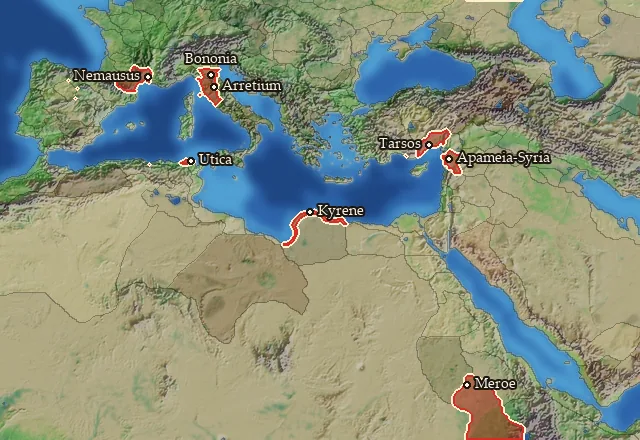
On 8 regions.
- Numeric effects where it is present: population growth -11 (Region Information Scroll)
Regions at this fertility (8)
Apamene · Arecomicia · Boia · Etruria · Kilikia Pedias · Kyrenaike · Medwi · Xatiq
Farm level 13
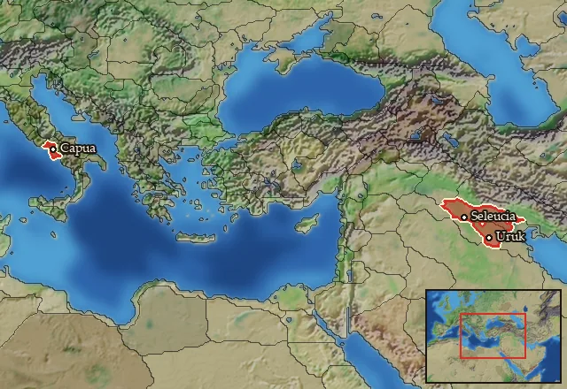
On 3 regions.
- Numeric effects where it is present: population growth -13 (Region Information Scroll)